，
，3．积分技术与复量
对于即使稍微复杂一些的代数函数和超越函数，基本的积分法——这个方法是牛顿引入的——还是把函数表示成级数，再逐项积分。数学家们逐步将积分技巧从一种有限的形式发展到另一种有限的形式。
在18世纪积分概念的使用是受限制的。牛顿利用了导数与反导数——不定积分，而莱布尼茨则强调微分与微分和。约翰·伯努利大概是追随莱布尼茨的，把积分当作微分的逆来处理，这样，如
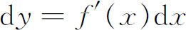
，则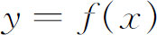
。那就是说，牛顿的反导数被选为积分，但微分却用来代替牛顿的导数。按约翰·伯努利的意思，积分计算的目的是从给定变量的微分之间的关系中找出变量本身之间的关系。欧拉强调导数是消失的微分之比，并说积分所关心的是找出函数本身。只是为了求积分的近似值，他才用和的概念。事实上，18世纪的所有数学家，都把积分当作导数或微分dy的逆。他们从来不问一个积分的存在性，当然在18世纪所做的大部分应用问题中，积分都能明确地求出来，因而也就不发生积分存在与否的问题。有几个积分技术发展的例子是值得注意的。为了计算积分
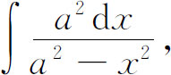
詹姆斯·伯努利曾作变量替换(8)
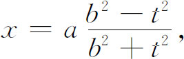
就把积分化为如下形式：
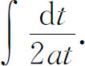
而这就立即积出一个对数函数来了。约翰·伯努利在1702年注意到，并在该年的科学院《记要》上发表了以下事实(9)：
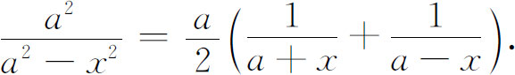
从而立即可把积分求出。这样，就引入了部分分式的方法。莱布尼茨也独立地发现了这一方法，并将它载入1702年的《教师学报》(10)。
在约翰·伯努利和莱布尼茨的通信中，部分分式法还用来求积分
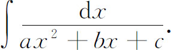
但是，因为
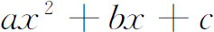
的一次因子可能是复的，部分分式法就导致下面这种形式的积分：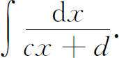
其中d至少是复数。然而约翰·伯努利和莱布尼茨都仍然用对数法则来积分，因而不免涉及复数的对数。他们既不顾忌当时复数的混乱，也毫不犹豫地这样作积分。莱布尼茨说复数的出现是无害的。
约翰·伯努利反复地运用这些方法。在1702年发表的一篇文章中(11)，他指出：正如用替换
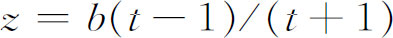
将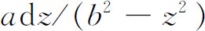
变成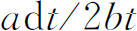
那样，用替换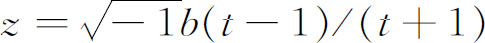
将微分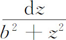
变成
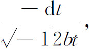
而后者是一个虚数的对数的微分。因为原积分也可以导出函数arctan，所以约翰·伯努利就建立了三角函数和对数函数之间的关系。
可是，这些结果很快引起了关于负数的对数和复数的对数性质的活跃的讨论。莱布尼茨于1712年的文章(12)，以及在1712年至1713年间他与约翰·伯努利的通信中都断言负数的对数是不存在的（他说是虚构的），而约翰·伯努利则想法证明它们必定是实的。莱布尼茨的论点是：正对数是用于大于1的数，而负对数用于0到1之间的数。因此，不可能有负数的对数。此外，假如-1有一个对数，那么
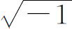
的对数就是它的一半；而 肯定是没有对数的。莱布尼茨在积分中已引出复数的对数后仍要这样论证真是很令人费解的。约翰·伯努利争论说：因为
肯定是没有对数的。莱布尼茨在积分中已引出复数的对数后仍要这样论证真是很令人费解的。约翰·伯努利争论说：因为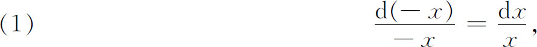
所以
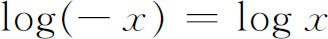
；又因为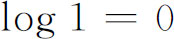
，所以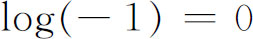
。莱布尼茨反驳道：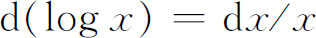
只对正的x成立。在1727年至1731年间，欧拉与约翰·伯努利在第二轮通信中发生了争论。约翰·伯努利坚持他的见解，而欧拉不同意这个见解，虽则当时欧拉并未坚持自己的意见。由于一些有关的今天还很有意义的进展，又因为导出了指数函数和三角函数的关系，使最后搞清什么是复数的对数成为可能。1714年，科茨（Roger Cotes，1682—1716）发表了一个复数的定理(13)，用现在的记号来表示，这个定理说的是
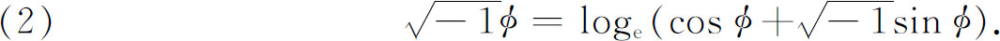
1740年10月18日，欧拉在一封给约翰·伯努利的信中说
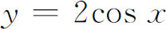
和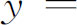
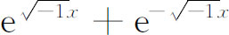
都是同一个微分方程的解（这是他由级数解而认识到的），因此它们应相等，1743年他又发表了(14)这个结果，即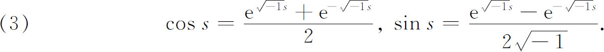
在1748年他重新发现了科茨的结果（2），它也可由（3）导出。
正当这个发展出现的时候，棣莫弗（Abraham de Moivre，1667—1754）由于撤销了保护卡尔文教徒的南兹敕令而离开法国住到伦敦，这时他至少内应地得到了现在以他命名的公式。在1722年的一篇笔记中，棣莫弗利用了1707年(15)已发表过的结果，他说，代表比为1∶n的两个角的正矢
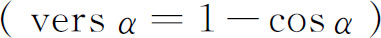
的x与t之间的关系可由以下两方程消去z得到(16)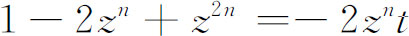
与
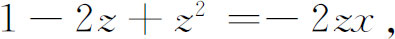
在这个结果中隐含着棣莫弗公式，因为如令
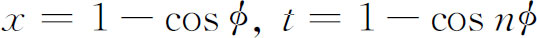
，就可导出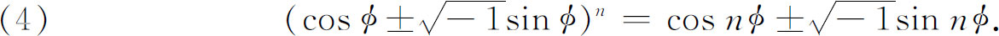
对棣莫弗来说，n是一个大于零的整数。实际上，他从未明显地写出最终结果；最终的公式是欧拉给出的(17)，欧拉还把此公式推广到任意实数n。
1747年前后，欧拉对指数函数、对数函数和三角函数之间的联系已有了充分的经验，足以得到有关复数的对数的正确结论。1749年，在题为《论莱布尼茨先生与约翰·伯努利先生关于负数和虚数的对数之争论》（De la controverse entre Mrs．［Messrs］Leibnitz et Bernoulli sur les logarithmes négatifs et imaginaires）(18)一文中，欧拉不同意莱布尼茨的反驳论点［莱布尼茨的论点是
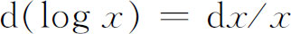
只对正的x成立］。他说，如果莱布尼茨的异议正确，就会扰乱全部分析的基础，即规则和运算的应用可以不管应用的对象性质如何。他断言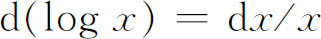
对一切正数和负数x都正确，但补充说：约翰·伯努利忘记了从前面的式（1）就可以导出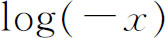
和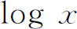
只差一个常数。这个常数必须是log（-1），因为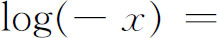
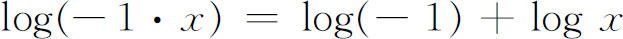
。因此，欧拉说：约翰·伯努利实际上假设了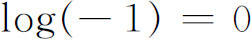
，但这是需要证明的。约翰·伯努利还作了另一个论证，对此欧拉也作了回答。例如约翰·伯努利论证道：因为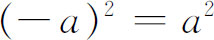
，所以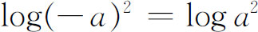
，因而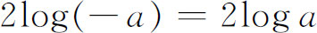
或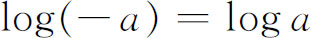
。欧拉反驳说，因为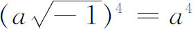
，则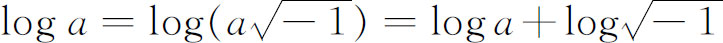
，所以在这种情况下，可推知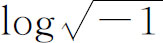
应为0。但欧拉说约翰·伯努利本人曾经在另一个场合证明了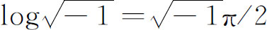
。莱布尼茨曾这样论证道：因为
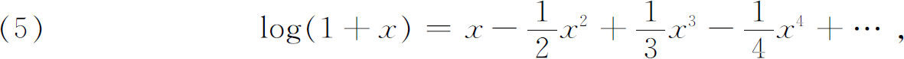
则对，
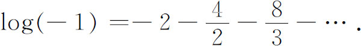
由此可见，log（-1）至少不是0［事实上，莱布尼茨曾经说过log（-1）不存在］。欧拉对这个论证的回答是：由
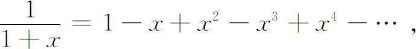
对x＝-3，可得
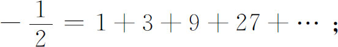
而对x＝1，可得
因此，将两式的左右两边分别相加得
由此，欧拉说：由级数得来的论证不证明任何东西。
在反驳了莱布尼茨和约翰·伯努利之后，欧拉给出了一个按现在的标准看来是错误的论证。他写道：
其中i是一个无穷大的数(19)。则
因此
因为是“无穷大次根”，它有无穷多个复值，所以y也有这些值，而因，所以log x也有无穷多个值。这里欧拉事实上写道(20)：
令，他得到
因而
其中λ是正整数或零。这样，欧拉断言：对于正实数而言，对数只有一个实值，其余都是虚值；但对于负实数或虚数而言，对数的一切值都是虚的。尽管欧拉对这问题有成功的解答，但他的工作却并未被人们接受。达朗贝尔（Jean Le Rond d'Alembert）提出了形而上学的、解析的、几何的论点去证明。